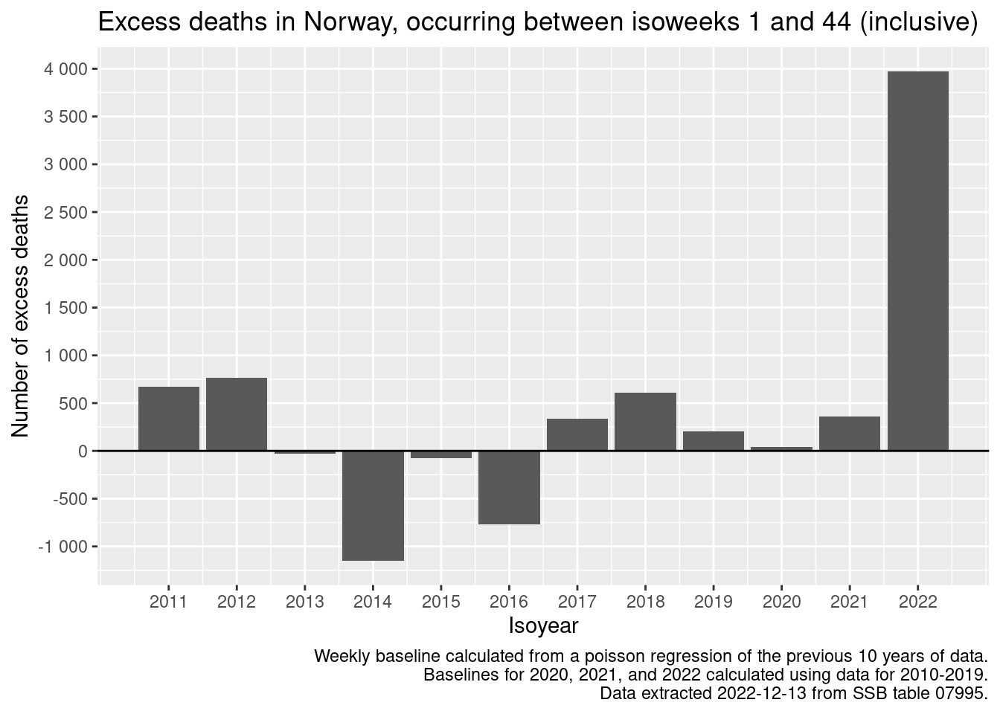

![]()
library(data.table)
library(magrittr)
library(ggplot2)
if (interactive()) {
folder_location <- "post/2022-12-13-all-cause-mortality-in-norway/"
} else {
folder_location <- ""
}# Downloading data
data <- PxWebApiData::ApiData(
"https://data.ssb.no/api/v0/en/table/07995",
Kjonn = "0",
Alder = "999A",
Tid = as.character(2000:2022),
Uke = paste0("U", formatC(1:52, width = 2, flag = "0"))
)
# Cleaning
d_deaths <- data$dataset[, c("Uke", "Tid", "value")]
setDT(d_deaths)
setnames(d_deaths, c("week", "isoyear", "deaths_n"))
d_deaths[, isoweek := stringr::str_remove(week, "U")]
d_deaths[, isoyearweek := paste0(isoyear, "-", isoweek)]
d_deaths[, isoweek := as.numeric(isoweek)]
d_deaths[, isoyear := as.numeric(isoyear)]
d_deaths[, week := NULL]
setcolorder(d_deaths, c("isoyear", "isoweek", "isoyearweek", "deaths_n"))
# Removing the latest 3 weeks of data (due to registration delay)
max_isoweek <- d_deaths[isoyear == 2022 & !is.na(deaths_n)]$isoweek %>%
max() - 3
d_deaths <- d_deaths[isoweek <= max_isoweek]# Aggregating
pd <- d_deaths[, .(deaths_n = sum(deaths_n)), keyby = .(isoyear)]
# Plotting
q <- ggplot(pd, aes(x = isoyear, y = deaths_n))
q <- q + geom_line()
q <- q + geom_point()
q <- q + scale_x_continuous(
"Isoyear",
breaks = seq(2000, 2022, 2)
)
q <- q + scale_y_continuous(
"Number of deaths",
labels = csstyle::format_nor_num_0,
breaks = seq(33000, 38000, 1000)
)
q <- q + expand_limits(y = c(33000, 38000))
q <- q + labs(
title = glue::glue(
"Deaths in Norway, occurring between isoweeks 1 and {max_isoweek} (inclusive)"
)
)
q <- q + labs(caption = "Data extracted 2022-12-13 from SSB table 07995.")
q
# Estimating the baseline
setorder(d_deaths, isoyearweek)
for(isoyear_pred in 2011:2022) for(isoweek_model in unique(d_deaths$isoweek)){
# Determining the training data
if(isoyear_pred <= 2019){
isoyear_train <- (isoyear_pred-10):(isoyear_pred-1)
} else {
isoyear_train <- 2010:2019
}
# Fitting the model
fit <- glm(
deaths_n ~ isoyear,
data = d_deaths[isoweek %in% isoweek_model & isoyear %in% isoyear_train],
family = "poisson"
)
# Predicting the baseline
pred <- predict(
fit,
d_deaths[isoweek %in% isoweek_model & isoyear %in% isoyear_pred]
) %>%
exp()
d_deaths[
isoweek %in% isoweek_model & isoyear %in% isoyear_pred,
deaths_baseline_n := pred
]
}# Calculating the excess mortality
d_deaths[, deaths_excess_n := deaths_n - deaths_baseline_n]# Aggregating
pd <- d_deaths[
!is.na(deaths_excess_n),
.(deaths_excess_n = sum(deaths_excess_n)),
keyby = .(isoyear)
]
# Plotting
q <- ggplot(pd, aes(x = isoyear, y = deaths_excess_n))
q <- q + geom_col()
q <- q + geom_hline(yintercept = 0, color = "black")
q <- q + scale_x_continuous(
"Isoyear",
breaks = seq(2011, 2022, 1)
)
q <- q + scale_y_continuous(
"Number of excess deaths",
labels = csstyle::format_nor_num_0,
breaks = seq(-1000, 4000, 500)
)
q <- q + labs(
title = glue::glue(
"Excess deaths in Norway, occurring between isoweeks 1 and {max_isoweek} (inclusive)"
)
)
q <- q + labs(
caption = "Weekly baseline calculated from a poisson regression of the previous 10 years of data.\nBaselines for 2020, 2021, and 2022 calculated using data for 2010-2019.\nData extracted 2022-12-13 from SSB table 07995."
)
q